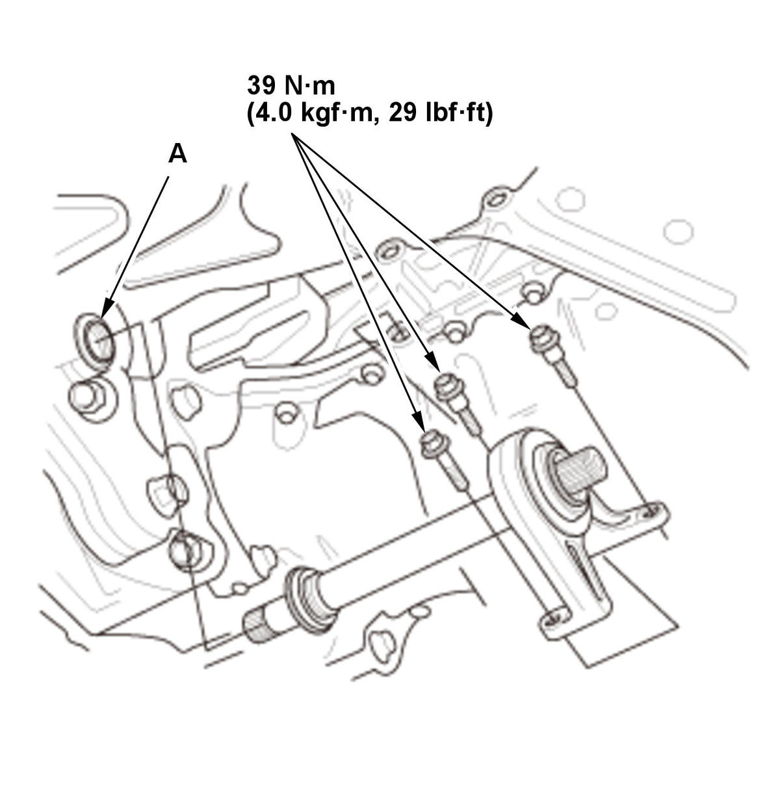

Removal and Installation
NOTE: Unless otherwise indicated, illustrations used in the procedure are for 1.5L engine.
- Vehicle - Lift
- Transmission Fluid - Drain
- Right Front Wheel - Remove
- Right Driveshaft - Remove
- Intermediate Shaft Assembly - Remove

Courtesy of HONDA, U.S.A., INC.NOTE: Hold the intermediate shaft horizontal until it is clear of the differential to prevent damaging the oil seal (A).
- All Removed Parts - Install
1. Clean the areas where the intermediate shaft contacts the differential thoroughly with solvent, then dry them with compressed air. NOTE: Do not wash the rubber parts with solvent.
2. Install the parts in the reverse order of removal.
- Wheel Alignment - Check
- Test Drive - Check